Неизведанные глубины Космоса интересовали человечество на протяжении многих веков. Исследователи и ученые всегда делали шаги к познанию созвездий и космического простора. Это были первые, но значительные достижения на то время, которые послужили дальнейшему развитию исследований в этой отрасли.
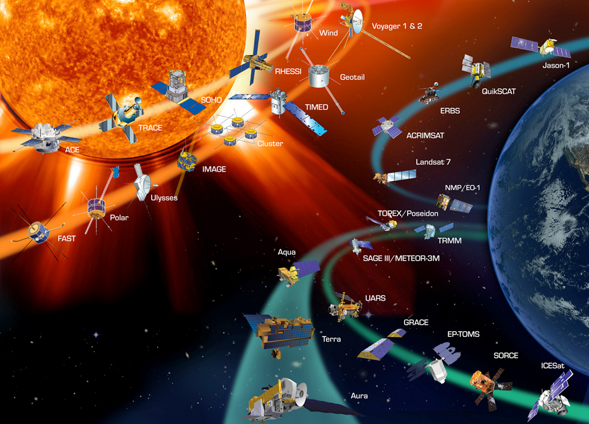Немаловажным достижением было изобретение телескопа, с помощью которого человечеству удалось заглянуть значительно дальше в космические просторы и познакомиться с космическими объектами, которые окружают нашу планету более близко. В наше время исследования космического пространства осуществляются значительно легче, чем в те года. Наш портал Kvant.Space предлагает Вам массу интересных и увлекательных фактов о Космосе и его загадках.
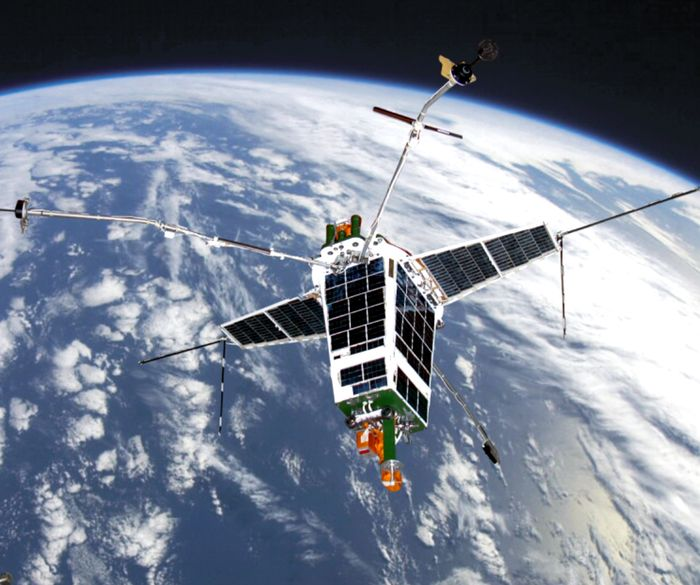Активное исследование космического пространства началось с запуска первого искусственно созданного спутника нашей планеты. Это событие датируется 1957 годом, когда он и был запущен на орбиту Земли. Что касается первого аппарата, который появился на орбите, то он был предельно простым в своей конструкции. Этот аппарат был оснащен достаточно простым радиопередатчиком. При его создании конструкторы решили обойтись самым минимальным техническим набором. Все же первый простейший спутник послужил стартом к развитию новой эры космической техники и аппаратуры. На сегодняшний день можно сказать, что это устройство стало огромным достижением для человечества и развития многих научных отраслей исследований. Кроме того, вывод спутника на орбиту был достижением для всего мира, а не только для СССР. Это стало возможным за счет упорной работы конструкторов над созданием баллистических ракет межконтинентального действия.
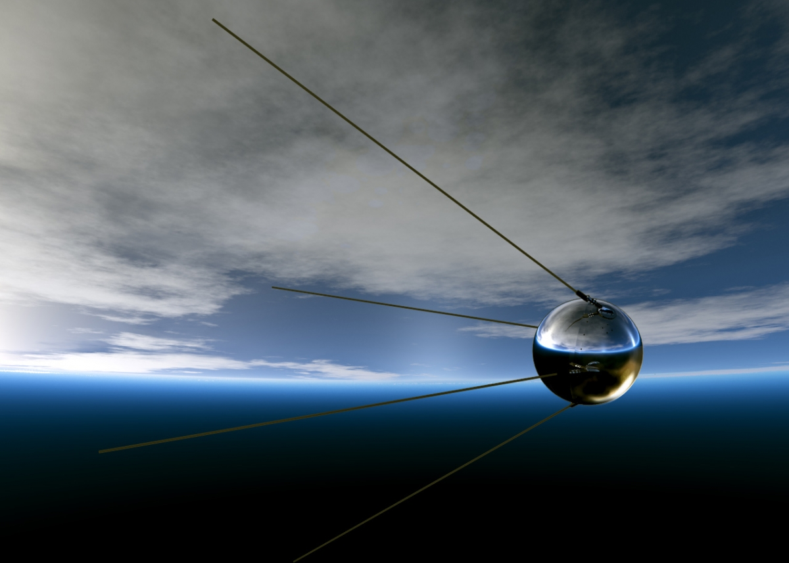Именно высокие достижения в ракетостроении дали возможность осознать конструкторам, что при снижении полезного груза ракетоносителя можно достичь очень высоких скоростей полета, которые будут превышать космическую скорость в ~7,9 км/с. Все это и дало возможность вывести первый спутник на орбиту Земли. Космические аппараты и техника являются интересными из-за того, что предлагалось много различных конструкций и концепций.
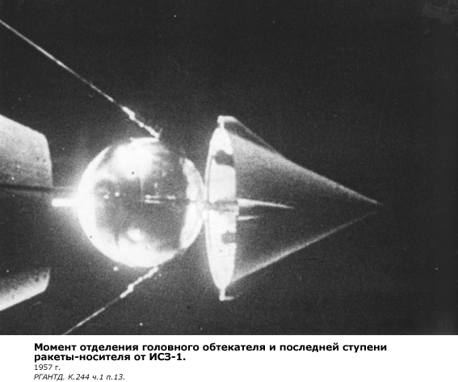В широком понятии космическим аппаратом называют устройство, которое осуществляет транспортировку оборудования или людей к границе, где заканчивается верхняя часть земной атмосферы. Но это выход лишь в ближний Космос. При решении различных космических задач космические аппараты разделены на такие категории:
Созданием первой ракеты для вывода спутника в Космос занимались конструкторы СССР, причем само ее создание заняло меньше времени, чем доводка и отладка всех систем. Также временной фактор повлиял на примитивную комплектацию спутника, поскольку именно СССР стремился достичь показателя первой космической скорости ее творения. Тем более что сам факт вывода ракеты за пределы планеты был более веским достижением на то время, чем количество и качество установленной аппаратуры на спутник. Вся проделанная работа увенчалась триумфом для всего человечества.
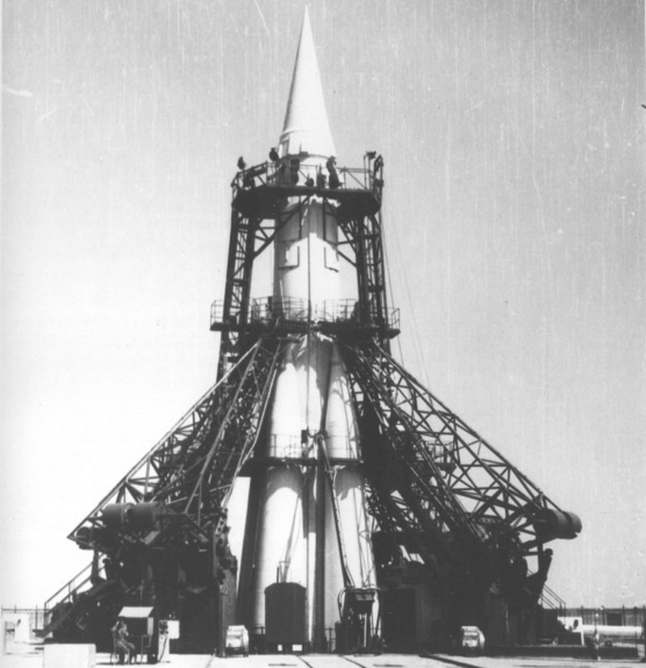Как известно, покорение космического пространства только было начато, именно поэтому конструкторы достигали все большего в ракетостроении, что и позволило создать более совершенные космические аппараты и технику, которые помогли сделать огромный скачок в исследовании Космоса. Также дальнейшее развитие и модернизация ракет и их компонентов позволили достичь второй космической скорости и увеличить массу полезного груза на борту. За счет всего этого стал возможным первый вывод ракеты с человеком на борту в 1961 году.
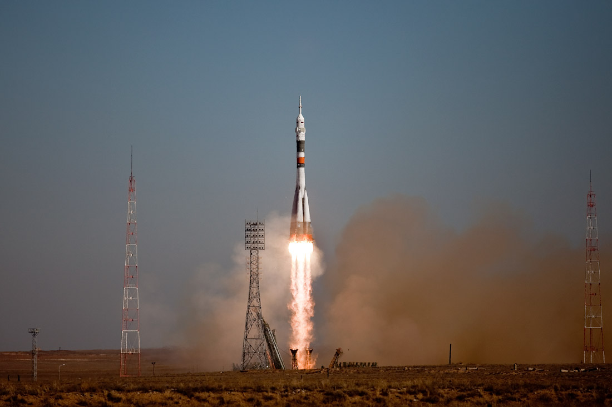Портал Kvant.Space может поведать много интересного о развитии космических аппаратов и техники за все года и во всех странах мира. Мало кому известно, что действительно космические исследования учеными были начаты еще до 1957 года. В космическое пространство первая научная аппаратура для изучения была отправлена еще в конце 40-х годов. Первые отечественные ракеты смогли поднять научную аппаратуру на высоту в 100 километров. Кроме того, это был не единичный запуск, они проводились достаточно часто, при этом максимальная высота их подъема доходила до показателя в 500 километров, а это значит, что первые представления о космическом пространстве уже были до начала космической эры. В наше время при использовании самых последних технологий те достижения могут показаться примитивными, но именно они позволили достичь того, что мы имеем на данный момент.
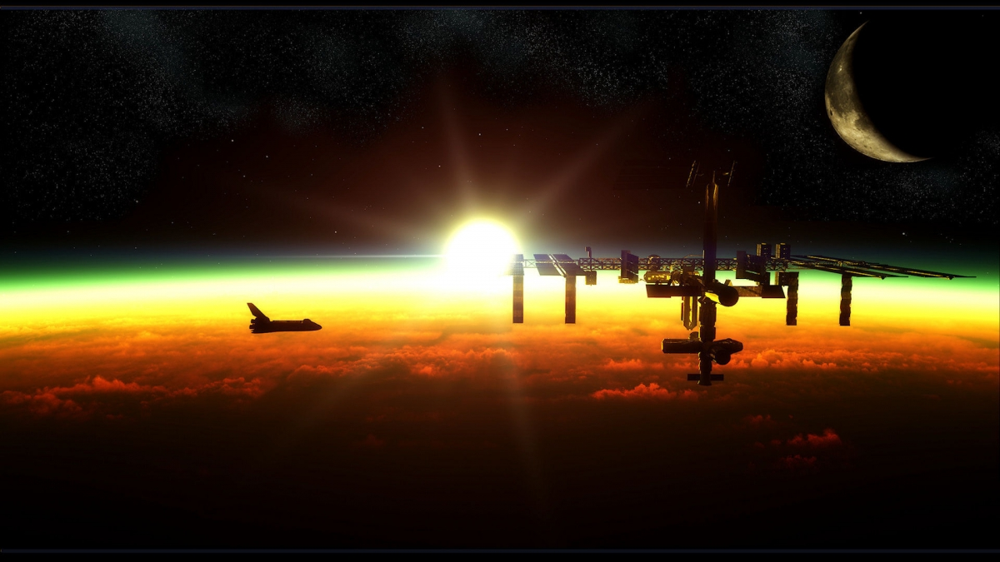Множество областей работы космической техники и достижения второй космической скорости позволили ученым получить доступ к более дальним космическим объектам. Именно поэтому в конце 50-х годов удалось осуществить пуск спутника в сторону Луны, кроме того, техника того времени уже позволяла отправлять исследовательские спутники к ближайшим планетам возле Земли. Так, первые аппараты, которые были посланы на изучение Луны, позволили человечеству впервые узнать о параметрах космического пространства и увидеть обратную сторону Луны. Все же космическая техника начала космической эры была еще несовершенная и неуправляемая, и после отделения от ракетоносителя главная часть вращалась достаточно хаотически вокруг центра своей массы. Неуправляемое вращение не позволяло ученым производить много исследований, что, в свою очередь, стимулировало конструкторов к созданию более совершенных космических аппаратов и техники.
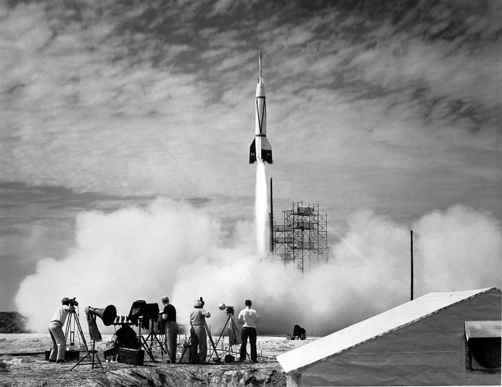Именно разработка управляемых аппаратов позволила ученым провести еще больше исследований и узнать больше о космическом пространстве и его свойствах. Также контролируемый и стабильный полет спутников и других автоматических устройств, запущенных в Космос, позволяет более точно и качественно передавать информацию на Землю за счет ориентации антенн. За счет контролируемого управления можно осуществлять необходимые маневры.
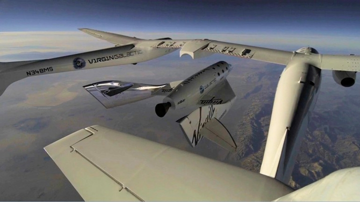В начале 60-х годов активно проводились пуски спутников к самым близким планетам. Эти запуски позволили более подробно ознакомиться с условиями на соседних планетах. Но все же самым большим успехом этого времени для всего человечества нашей планеты является полет Ю.А. Гагарина. После достижений СССР в строении космической аппаратуры большинство стран мира также обратили особое внимание на ракетостроение и создание собственной космической техники. Все же СССР являлся лидером в данной отрасли, поскольку ему первому удалось создать аппарат, который осуществил мягкое прилунение. После первых успешных посадок на Луне и других планетах была поставлена задача для более детального исследования поверхностей космических тел с помощью автоматических устройств для изучения поверхностей и передачи на Землю фото и видео.
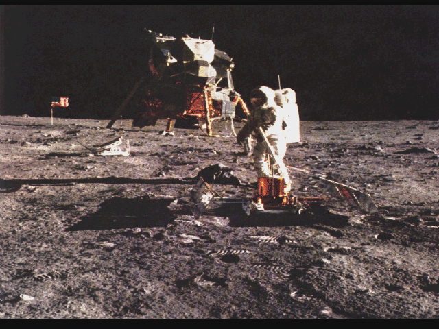Первые космические аппараты, как говорилось выше, были неуправляемыми и не могли вернуться на Землю. При создании управляемых устройств конструкторы столкнулись с проблемой безопасного приземления устройств и экипажа. Поскольку очень быстрое вхождение устройства в атмосферу Земли могло просто сжечь его от высокой температуры при трении. Кроме того, при возвращении устройства должны были безопасно приземляться и приводняться в самых различных условиях.
Дальнейшее развитие космической техники позволило изготовлять орбитальные станции, которые можно использовать на протяжении многих лет, при этом менять состав исследователей на борту. Первым орбитальным аппаратом данного типа стала советская станция «Салют». Ее создание стало очередным огромным скачком человечества в познании космических пространств и явлений.
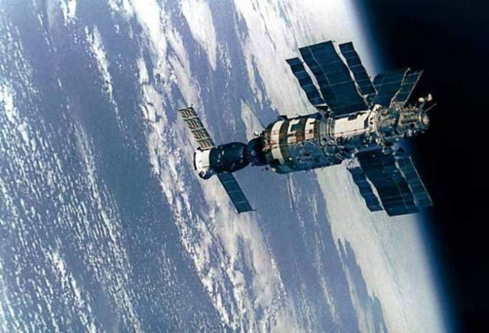Выше указана очень маленькая часть всех событий и достижений при создании и использовании космических аппаратов и техники, которая была создана в мире для изучения Космоса. Но все же самым знаменательным стал 1957 год, с которого и началась эпоха активного ракетостроения и изучения Космоса. Именно запуск первого зонда породил взрывоподобное развитие космической техники во всем мире. А это стало возможным за счет создания в СССР ракетоносителя нового поколения, который и смог поднять зонд на высоту орбиты Земли.
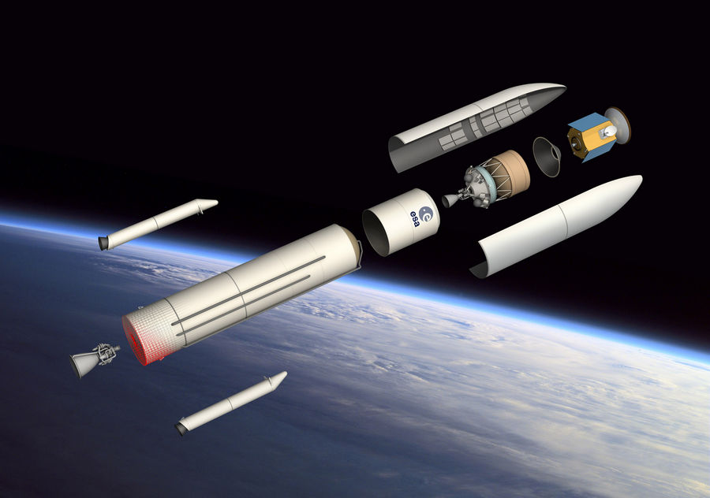